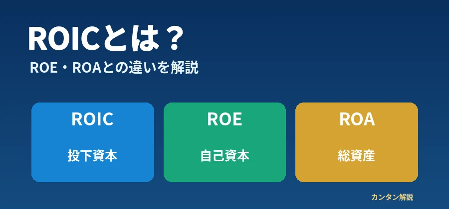

株式投資・企業分析 ｜ 公開日・更新日：
ROICとは？ROE・ROAとの違いと企業の資本効率の見方を初心者向けに解説

ROIC・ROE・ROAは、企業が利益を生み出す効率を異なる角度から見る指標です。利益額だけでは見えない資本の使い方を、計算例と比較表で整理します。
この記事の目次
1. ROICとは？
ROIC（Return on Invested Capital／投下資本利益率）は、事業に投じた資本に対してどれだけ税引後の営業利益を生み出したかを測る指標です。
ROIC ＝ NOPAT（税引後営業利益）÷ 投下資本 × 100
NOPATとは？
本業の営業利益に税負担を反映した利益の概念です。簡便には「営業利益×（1－仮定した税率）」で求めますが、実務では税金や営業外項目などの調整方法が異なります。
投下資本とは？
事業の運営に使われている資本で、例えば有利子負債と自己資本を基礎に算出したり、運転資本と事業用固定資産から算出したりします。余剰現金、のれん、リース負債などの扱いも企業により異なります。
重要：ROICに唯一の統一計算式があるわけではありません。投下資本の範囲やNOPATの調整、期中平均の利用など、企業の定義を必ず確認しましょう。
2. ROIC・ROE・ROAの違い
違いは、利益を「何に対して」比較するかです。
| 指標 | 主な計算方法 | 何を見る？ |
|---|---|---|
| ROIC | NOPAT ÷ 投下資本 × 100 | 事業に投じた資本の効率 |
| ROE | 当期純利益 ÷ 自己資本 × 100 | 株主に帰属する資本に対する利益 |
| ROA | 利益 ÷ 総資産 × 100 | 総資産に対する収益性 |
表は左右にスクロールできます。
連結ROEでは、一般に親会社株主に帰属する当期純利益と、それに対応する自己資本を使います。ROAは当期純利益、経常利益など採用する利益によって値が変わります。分母には期首・期末の平均残高を使う場合があり、比較時には定義を揃える必要があります。
3. ROICの計算例
架空企業Aの営業利益が100億円、説明用に仮定した実効税率が30％、投下資本が700億円とします。
税率30％は計算例の仮定です。実際の企業の税率や納税額を示すものではありません。
4. ROE・ROAの計算例
別の架空企業Bの当期純利益60億円、自己資本400億円、総資産1,000億円とします。
ROE ＝ 60 ÷ 400 × 100 ＝ 15％
ROA ＝ 60 ÷ 1,000 × 100 ＝ 6％（当期純利益を使用）
いずれも説明用の単純計算であり、実在企業のデータではありません。ここでは期末平均ではなく、提示した残高をそのまま用いています。
5. なぜROEが高くても安心できないの？
ROEは分母の自己資本が小さくなるだけでも上がることがあります。借入金を増やして事業を拡大した場合、財務レバレッジの影響でROEが高まることがあります。また、自社株買いで自己資本が減少すると、利益が同じでもROEが上昇する場合があります。
ROEの上昇＝本業の収益力向上、とは限りません。負債、自己資本の変化、利益の継続性を一緒に見ましょう。
6. ROICを見るメリット
ROICは株主の自己資本だけでなく、事業に使う負債性資本も含めた資本効率の評価に役立ちます。設備投資、事業拡大、M&Aなどに投じた資本が収益を生んでいるか考える手掛かりです。ただし、投資直後は利益がまだ伸びず、一時的にROICが低くなることもあります。ROIC単独で企業価値や投資の成否は決まりません。
7. ROICとWACCの関係
WACC（加重平均資本コスト）は、株主が期待するリターンと借入金などの調達コストを、資本構成に応じて加重平均した推計値です。
- ROIC ＞ WACC：資本コストを超える収益を生んでいる可能性
- ROIC ＜ WACC：資本コストに見合う収益を生んでいない可能性
架空例：ROIC 10％ － WACC 7％ ＝ ＋3％ポイント
この差は資本効率を考える参考になりますが、将来の企業価値向上や株価上昇を保証しません。WACCは市場環境、負債・株主資本コストの推計方法、税率などの前提によって変わるため、ROICと比較する際は算出条件を確認しましょう。
8. ROICが高い企業は優良企業？
高いROICは資本効率を示す一つの材料ですが、それだけで優良企業と断定できません。業種・ビジネスモデル、設備投資の規模、成長段階、一時的な利益、投下資本の定義、将来の投資計画、財務状況を確認します。特に設備集約型と資産の少ない事業など、異業種間での単純比較は避けましょう。
9. ROICとフリーキャッシュフロー
ROICは投下資本に対する利益の効率、フリーキャッシュフロー（FCF）は事業活動と投資を経た現金創出力や資金余力を考える指標です。ROICが高くても、設備投資や運転資本の増加でFCFがマイナスになる場合があります。
10. ROICと自社株買い・配当性向
企業が生み出した利益や資金は、成長投資、借入金返済、配当、自社株買いなどに配分されます。ROICは投下資本からの収益性、配当性向は利益に対する配当の割合であり、同じ指標ではありません。自社株買いは資本構成やROEに影響することもあります。
配当政策や自社株買いを考える際は、利益の継続性とFCF、財務余力も確認しましょう。
11. ROICを見るときのチェックリスト
- ROICの算出方法は何か
- 投下資本に何が含まれているか
- ROICは複数年で改善しているか
- WACCとの関係はどうか
- ROE・ROAと比較してどうか
- 有利子負債が増えていないか
- 営業利益やNOPATは安定しているか
- フリーキャッシュフローはどうか
- 成長投資と株主還元のバランスはどうか
12. 決算資料ではどこを確認する？
決算短信で利益や財務状況、有価証券報告書で財務諸表と注記、統合報告書や中期経営計画で資本政策・ROIC目標・投資方針を確認できます。ROICを公表していない企業もあります。企業独自のROICがある場合は、算出方法、対象事業、調整項目、対象期間を確認してください。
13. よくある質問（FAQ）
ROICとは何ですか？
事業に投じた資本に対して、税引後営業利益をどれだけ生み出したかを見る指標です。
ROICとROEは何が違いますか？
ROICは事業に投じた資本、ROEは主に株主に帰属する自己資本を基準にします。
ROICとROAは何が違いますか？
ROICは投下資本、ROAは総資産を分母とする点が主な違いです。
ROICはどう計算しますか？
代表例はNOPAT÷投下資本×100です。実際の定義は企業によって異なります。
NOPATとは何ですか？
税負担を考慮した営業利益の概念です。
投下資本とは何ですか？
事業に投入されている資本です。有利子負債と自己資本などから求める方法があります。
ROICが高ければ優良企業ですか？
断定できません。業種、投資段階、財務状況、利益の継続性なども重要です。
ROICとWACCはどう関係しますか？
ROICと資本コストであるWACCを比較し、資本コストを上回る収益性か考えます。
ROEが高い企業は安全ですか？
ROEだけで安全性は判断できません。借入金や自己資本の変化も確認してください。
14. まとめ
ROICは投下資本、ROEは自己資本、ROAは総資産に対する収益性を測る指標です。利益の大きさだけでなく、投下資本、財務構造、現金創出力、資本コストを総合的に確認しましょう。いずれも株価上昇を保証する指標ではありません。
ご利用にあたっての注意事項
本記事は一般的な金融教育情報であり、特定銘柄の購入や売却を推奨するものではありません。各指標の定義・会計基準は企業ごとに異なります。投資判断は最新の開示資料を確認し、ご自身の判断と責任で行ってください。